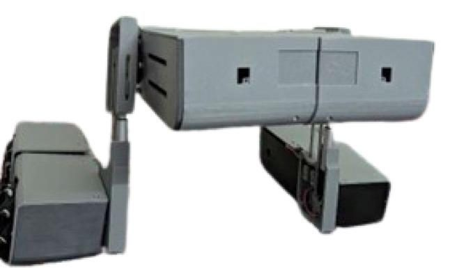
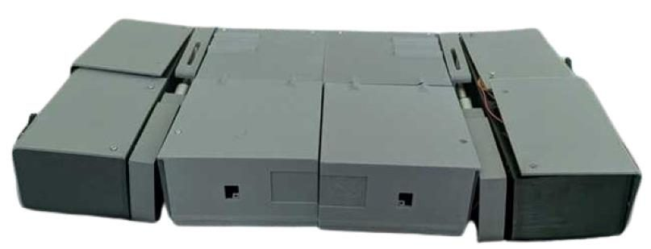
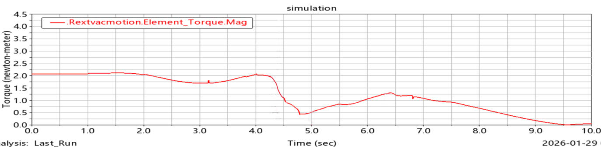

Mecanum-Wheel Stair-Climbing Robot
Summary
What
Indoor service robot that drives in any direction on mecanum wheels and climbs stairs with two lateral leg modules, built as an industry sponsored capstone.
Role
Designed, 3D printed and tested a mecanum-wheel robot with two lateral leg modules, ESP32-S3 control and an MSC Adams torque model, in a team of 3.
Results
- Climbed stairs up to about 239 mm and placed Third at GIKI Open House 2026.
- Prototype built for PKR 116,094, with a closed footprint of 420 x 302.61 mm.
- MSC Adams torque study: leg joint about 3.8 to 4.0 Nm peak, vertical joint about 2.1 Nm.


Problem
Wheeled indoor robots cannot climb stairs, and legged or tracked robots are bulky or slow on flat floors. The project set out to build one compact platform that moves in any direction on flat floors and traverses stairs for indoor service use. It was industry sponsored, and the concept was refined after discussions with Beko about indoor cleaning applications.
Method
- Reviewed wheeled, tracked, legged and hybrid stair climbers. Tracked designs were rejected for friction when turning, floor damage and lack of omnidirectional motion. Rocker-bogie was rejected for complexity and chassis tilt.
- Selected an articulated gantry with a square gait and two lateral outrigger leg modules. The legs lift the body, the chassis steps onto the next stair, then the legs reposition.
- Set the design objective at riser heights up to 22 cm. The open configuration is rated for a maximum stair height of 239 mm, and the linear actuator sets a minimum start height of 190 mm.
- Derived mecanum inverse kinematics for four wheels with roller angles of plus 45 and minus 45 degrees, relating chassis velocity to wheel speeds.
- Modelled the robot in SolidWorks as a modular central body with left and right leg subsystems, and 3D printed the parts in PLA.
- Actuation: six NEMA 17 steppers with DRV8825 drivers, a high-torque servo and a linear actuator per side. Four steppers drive the wheels, and two with cycloidal gearboxes shift the legs.
- Control: three ESP32-S3 boards, one master in the central body and two slaves, linked by ESP-NOW. Each unit has its own 15 V 5000 mAh LiPo battery.
- Sensing: two paired VL53L0X distance sensors at the front detect the stair riser using AND logic. Two more on the actuator leg detect step height, and the actuator extends until they no longer see the stair.
- Built an MSC Adams multibody model of the chassis, wheels, legs and actuators, driven by input motion profiles, to read joint torques during the climb.
- Tested omnidirectional motion on tile and smooth concrete (forward, lateral, diagonal and rotation), then the sensors, actuators, master and slave communication, and the full climbing sequence.



Equations
- EQ. 1
Mecanum inverse kinematics, with a and b the half chassis length and width: [w1 w2 w3 w4] = (1/r) [[1, -1, -(a+b)], [1, 1, (a+b)], [1, -1, (a+b)], [1, 1, -(a+b)]] [vx vy wz] - EQ. 2
Wheel velocity components: [vx vy] = vd [1 0] + vs [-sin(alpha) cos(alpha)], with vd = omega x r
Results
In the Adams study the leg actuation joint peaks at 3.8 to 4.0 Nm during the first 3 s (the initial lift), falls near zero at 3 to 4 s and shows a secondary peak of 1.3 to 1.5 Nm at about 6 to 6.5 s. The vertical joint carries about 2.0 to 2.1 Nm for the first 2 s and about 1.2 to 1.3 Nm at 6 to 6.5 s. The robot measures 420 x 302.61 mm closed (cleaning mode) and 542 mm long when open, with a design stair height of 239 mm. The prototype cost PKR 116,094 (items 111,268, deliveries 3,226 and labor 1,600). Mobility and actuator tests showed smooth, responsive motion without excessive vibration or slip, and the linear actuator extended and retracted without stalling, overheating or binding. The working prototype climbed stairs up to about 239 mm, and the project placed Third at GIKI Open House 2026.


Validation
Actuator loads from the Adams simulation were used to confirm component selection.
Limitations
- Torque figures come from simulation and were not measured on the prototype.
- Control is sequential and rule-based. Closed-loop feedback and better actuator synchronisation are future work.
- Sensing uses distance sensors only. LiDAR or depth cameras are future work.
- The structure is PLA, which the report calls adequate for prototyping and not durable.
- The prototype is costly, mechanically complex and uses a lot of energy when climbing.
Tools
- SolidWorks
- MSC Adams
- ESP32-S3
- ESP-NOW
- NEMA 17
- VL53L0X
- PLA 3D printing